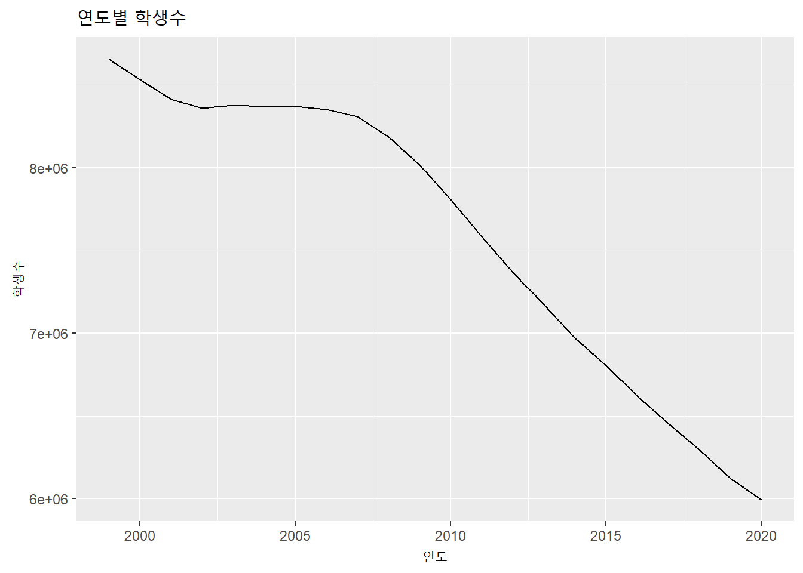
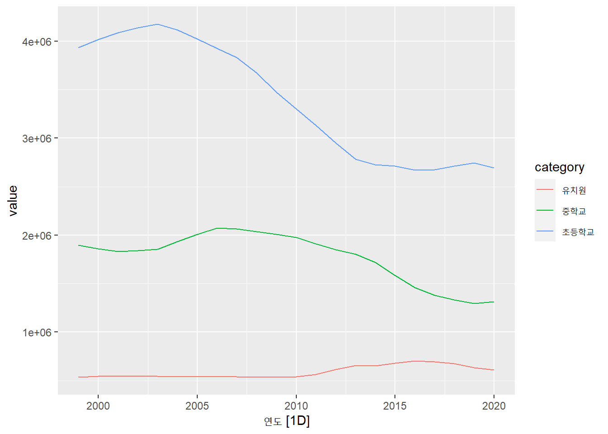
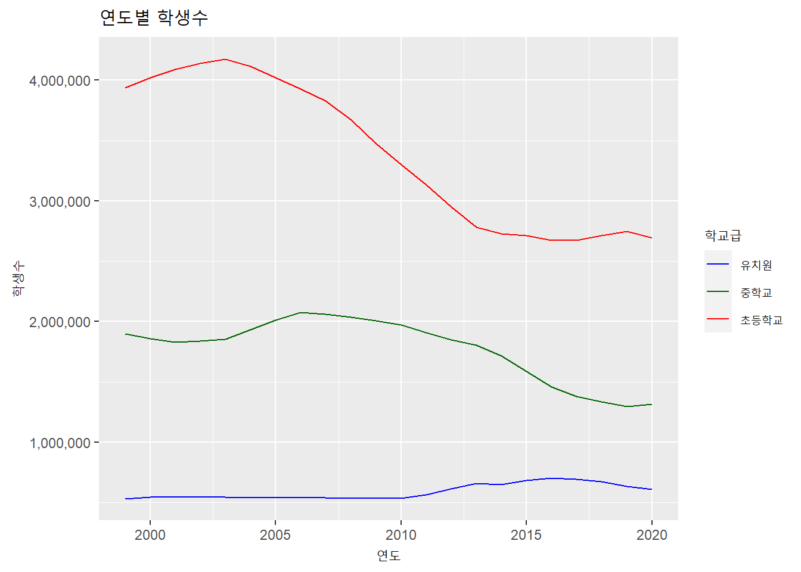
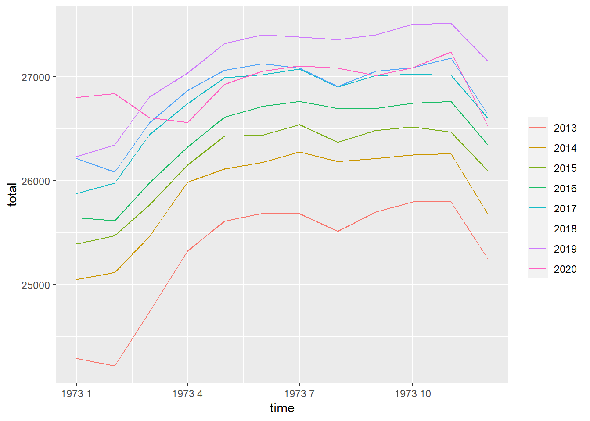

3.4 tsibble : feasts 패키지
tsibble 객체를 분석하고 plotting 하기 위해서 feasts 패키지가 제공된다. feasts는 ’Feature Extraction And Statistics for Time Series’의 준말이다. tsibble 객체을 대상으로 시계열기능, 분해, 통계산출, 시각화를 위한 각종 함수들을 제공한다. feasts도 앞서 ts를 다루는 forecast 패키지의 개발자인 Rob Hyndman 교수가 제작한 패키지이기 때문에 forecast와 유사한 함수들이 있다. 우선 tsibble 객체의 가장 간단한 plot을 생성하는 방법은 forecast 패키지와 같이 autoplot()을 사용하는 방법이다.
library(feasts)
library(dplyr)
students.tsibble %>% autoplot(학생수계)+
labs(title = '연도별 학생수', x = '연도', y = '학생수')
하지만 forecast와는 달리 feasts에서는 autolayer()를 통해서 원하는 데이터의 layer를 추가할 수 없다. 따라서 다중(multivariate) 시계열 plot을 그리기 위해서는 긴(long)형태의 tsibble 객체로 변환하여야 한다.
students.tsibble %>% select(1, 3, 4, 5) %>%
tidyr::gather(category, value, 2:4) %>% autoplot()## Plot variable not specified, automatically selected `.vars = value`
코드 설명
%>%를 students.tsibble의 첫번째, 세번째, 네번째, 다섯번째 열을 선택하고 이 열들을gather()를 사용하여 category 열로 모으고 해당 데이터를 value 열로 모음.- 이 후
autoplot()을 사용하여 다중 시계열 plot을 생성.
위와 같이 tidy에서 제공하는 몇가지 방법을 사용하면 원하는 plot을 생성할 수 있지만 범례 설정이나 세부적인 설정이 여간 곤혹스러운 것이 아니다. 따라서 feasts에서 제공하는 plotting 방법보다는 차라리 ggplot을 사용하는 것이 오히려 편하다.
ggplot(students.tsibble, aes(x = 연도)) +
geom_line(aes(y = 초등학교, group = 1, color = '초등학교')) +
geom_line(aes(y = 유치원, group =1, color = '유치원')) +
geom_line(aes(y = 중학교, group =1, color = '중학교')) +
labs(title = '연도별 학생수', x = '연도', y = '학생수', color = '학교급') +
scale_y_continuous(labels = scales::number_format(big.mark = ',')) +
scale_colour_manual(values = c('초등학교' = "red", '유치원' = "blue", '중학교' = 'darkgreen'))
코드 설명
ggplot()으로 원본 데이터인 students.tsibble을 plot 대상 데이터로 설정하고aes()로 공통으로 사용될 X축 설정만 해줌.geom_line으로 첫번째 라인 geometry layer를 생성.aes()로 Y축을 초등학교에 바인딩. 초등학교 열은 단일 데이터 그룹핑(group = 1), color를 ’초등학교’로 매핑(color = '초등학교', 범례에 매핑해줄 이름).
geom_line()으로 두번째 라인 geometry layer를 생성.aes()로 Y축을 유치원에 바인딩. 유치원 열은 단일 데이터 그룹핑(group = 1), color를 ’유치원’으로 매핑.labs()를 사용해 plot 제목, X축 제목, Y축 제목, 범례 제목을 설정scale_y_continuous()를 사용하여 Y축의 라벨을 숫자형(천단위 콤마)으로 조절scale_color_manual()을 사용하여 컬러 매핑값을 실제 컬러값으로 설정
feasts 패키지에서는 시계열 분석에 사용하는 계절성 plot 함수인 gg_season() 함수와 gg_subseries() 함수를 제공한다.
employees.tsibble %>% mutate(time = yearmonth(employees.tsibble$time)) %>%
gg_season(total)
코드 설명
- employees.tsibble은 월별 데이터이기 때문에
gg_season()을 사용하기 위해서는yearmonth()를 사용하여 시간인덱스(time) 열을yearmonth데이터 클래스로 변환하여 사용.
- employees.tsibble은 월별 데이터이기 때문에
employees.tsibble %>% mutate(time = yearmonth(employees.tsibble$time)) %>%
gg_subseries(total)
코드 설명
autoplot()에 전달하고 students.tsibble의 ‘학생수계’ 열의 데이터를 plotting함. labs()를 사용하여 plot 제목(title =) , X 축 제목(x =), Y 축 제목(y =)을 설정